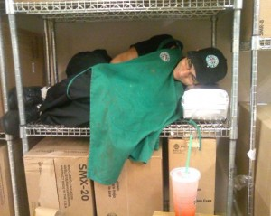

Coping with Clopening: Retail Worker’s Most Dreaded Shift
Submitted on Sat, 04/28/2012 - 12:44pm
By liberte Locke - April 11, 2012
I drag my broken jittery body home through the maze of late night construction New York City subways. I finally reach my quiet apartment where the only ones up are our three cats screaming for food and persistently walking just where I’m trying to walk. Tonight I manage to not step on them but usually, in this state, I can’t help it. I apologize with head-pettings and catnip. I feed the cats and then remember that I spent my entire lunch break at work chain smoking away that last extremely rude customer I had before clocking for my break instead of eating the ramen noodles that I brought. I open the fridge and realize that every meal possible would take way more work than I have in me so I close the door.
I go to the bathroom and while peeing set my alarm on my phone. This is a ritual. I’ve learned in the past that it is completely possible after a closing shift that I may just fall asleep in the bathroom. And if not the bathroom, maybe while sitting up trying to eat a late meal or laying on the couch watching tv. So setting my alarm as soon as I get home is crucial. Being late to work when I’m targeted by management (because of being a union organizer) is not an option, ever.
I’m awake enough from all the caffeine I consumed at my job, Starbucks, that I don’t fall asleep in the bathroom but I do spend ten minutes fumbling brainlessly through the clean laundry I didn’t have time to put up. I’m looking for something loose to sleep in – it takes so long because twice I forget entirely why I’m digging through the bag and I start putting laundry up thinking that is what I what I meant to be doing. I then suddenly stop, thinking to myself, “it’s too late for this, I’m exhausted. Go to bed. Go to bed.” I finally change and go into the living room to watch tv.
I already know that going straight to bed, no matter how tired I am, won’t work. I have to turn off my brain first. Without some distraction my brain will just fill will endless To-Do lists. My responsibilities pile up. All the things I need to get done combine with what I’d like to get done. I’m filled with regret for what I was unable to get done with my day because of having work and then being too exhausted to do anything else. I’m so tired that petty concerns really consume me. I think and re-think about Facebook status updates to reflect my exhaustion and busyness just praying that all the crucial folks will see it and realize why I haven’t returned their phone calls, emails, or finished my deadlines for different projects. These lists go on and on but I’m too tired to even hold a pen to write the lists down.
I stare at the tv, my eyes blurring and I recite in my head, before the characters even say it, the various lines for that episode of the Simpsons. In my years of sleepless nights, I’m certain I’ve memorized the majority of the series. I still haven’t learned Spanish but I can recite an entire animated TV show. This is what this job does to me. I’m awake but unable to be productive. My time is not my own. I’m clocked out, at home, supposedly on my own time but I’m just in and out of consciousness. In between making lists and reciting the Simpsons I’m dwelling on fucked up interactions with customers. I’m wondering if that coworker was right about the company changing the amount of green tea powder we put into Green Tea Lattes. I’m concerned that when I left the store I forgot to restock the straws at the handoff plane. After about an hour of this I go on Facebook on my phone, which I’m holding with my hand resting on the bed because I can’t bare to lift it. I scroll through, beating myself up because I only have the energy to hit “like” but not really comment on my friends’pages even when people are really considerate and write on mine often. Then I think I’m too hard on myself but dismiss that and feel bad again. The caffeine from work, the adrenaline from the fast-paced job, the exhaustion of my body and mind, with the lack of good nutrition – I’m spent.
I look at the time and realize I have 3 hours before I have to get up, look presentable, get on the train and head to another shift of the same rush, rush, rush of the day before. I have what retail workers dread the most – a clopening. I just closed the store and have to return to work to open the store tomorrow. This is very common in the retail world. Where computers jumble workers like numbers and generate schedules without a concern for the humans involved. This is where bosses see us as machines. Plug us into whatever shift they’d like without the slightest consideration. I realize that if I don’t pass out this minute then I’ll be missing even more sleep. I need to sleep immediately but years ago I knew that sleeping pills would not be useful. You need to “dedicate a full night of sleep” claims the label and I have 3 hours. I reach for many a baristas’ sleep aid – a pipe loaded with weed. Weed’s supposed to be recreational but in this context it’s truly medicinal. I smoke and pass out.
I wake up dehydrated, probably from smoking and so much coffee. I press snooze up until I know I have to haul ass to get out the door. I run to the train, cram into it, stand for a hour of transit and just when my knees feel like they will give out – ding, and the train doors open at my stop for work. I stumble out, stepping on some poor woman’s foot and my attempt to apologize comes out almost a whisper, raspy and inaudible. I look at the doors to my job and curse myself for not getting up early enough to have coffee before starting my shift.
I think is this for real? Is this my life? I’ve been a barista for nearly six years and have known hundreds of baristas. My story is extremely common and unites many of us. We know that we are paid from the time we clock in till the time we clock out. Wage theft, in the traditional sense, is not usually a problem at this large public company. Generally we’re paid for the time we clock, however I can’t help but feel like my traveling to work, the time and money it takes to acquire my uniform and keep it clean, the money I spend on weed just to bring me down from the caffeine I ingest to be alert in a job where burns, slips, and falls are common – that money should be reimbursed. I feel like I can’t be productive. All I got done in the evening, on my own time, was feeding my cats and I had considered skipping it out of effort. I can’t help but know that my time is not my own. These are the hours I work unpaid. My waking, productive hours are owned and controlled by the bosses that in return give me my paycheck while I’ve helped create a huge profit for my employer. My exhausted, useless, painful hours surrounding my shifts are on the house, for free, and that’s the time I feel costs me the most.
We are not machines. Treating us like machines only makes us break down. Sleep deprivation is widespread in my field. Lack of restful sleep contributes to depression and bad health. When we take a job we’re aware of certain sacrifices of time and swallowing our pride time and again in the face of rude customers and demanding management. What few focus on is all the other sacrifices we make when sacrificing our time. I want so desperately to have control over my own labor. These are my skills, I’ve honed them. This is my body, I’m responsible for it. Given those two things I can’t understand why the large profits go to bosses living in luxury and the pain, effort, and sacrifice is coming from those in poverty that already have to do everything else for themselves on top of going to work.
Yes, Howard Schultz – the CEO of Starbucks – must be a pretty busy person. However, I doubt he’s a have to work till 2am, rush home to haul laundry to a public 24-hr Laundromat in order to have clean apron for the next morning shift, feed animals, feed children, clean house, run errands, cook your own food, help out your neighbor, work two underpaid jobs, and then truly not know the next time you’ll be able to get a full night’s sleep kind of busy person. Wealthy people hire working people to do all their errands. They hire us to make their money and hire us to keep them comfortable while we’re making them their money. Yet when I speak openly about needing weed to sleep so I can return to work after closing it conjures thoughts of laziness. “Those poor people always using drugs.” I use my union more than I use drugs. I don’t know how worse off I’d be if I never learned to fight back at work. Clopenings are common place for many people but because of my organizing a clopening is rare. Bosses know we hate and resent being scheduled for one. They try to appease me from time to time but because it’s not about me but about all workers, I get just as riled up when I learn my coworkers must clopen. A couple days after a coworker works a clopen I’ll call them and say, “you know, we were never meant to live this way. I’d like to talk to you about the IWW…”